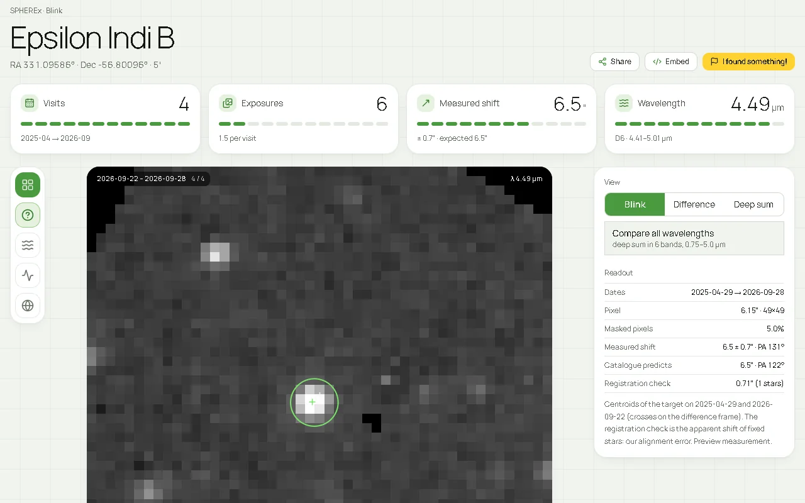

SkyBlink.
A free web tool that blinks real infrared images from NASA's SPHEREx mission, so moving stars and brown dwarfs stand out, and measures how far they moved.
Find what moves in a new map of the sky.
NASA's SPHEREx telescope maps the whole sky in infrared and comes back to the same patch months later. The NASA Space Apps 2026 challenge “Planet X and SPHEREx” asked for ways to look for moving and changing objects in that data.
The images are free, but comparing them takes astronomy software and a lot of patience. We wanted anyone to see the change in a browser.
A blink comparator in the browser.
Blink
SkyBlink downloads real SPHEREx images of one patch of sky, aligns visits taken months apart and plays them as an animation. Moving objects jump.
Difference
Subtracting one visit from another turns a moving object into a black-and-white pair: where it was, and where it is now.
Measured shift
SkyBlink measures the shift in arcseconds with an error, checks the alignment against fixed stars and compares the result with the catalogue.
For everyone
Search by star name or coordinates, five ready objects to start with, a Simple mode, and the interface in English, Russian and Uzbek.


We only claim what we measured.
Every number in SkyBlink comes from real SPHEREx images, and every shift comes with its error. When the data cannot answer, the app says so.
- Epsilon Indi B: 6.0 ± 1.1″, the catalogue predicts 6.5″
- Barnard's Star: 11.9 ± 1.3″ against 10.4″ in the catalogue; its core is saturated, so the value is indicative
- WISE 0855, the coldest known brown dwarf, is too faint in this data to measure a shift, and the app does not claim one
- A moving source with no Gaia match is shown as a candidate to check, not as a discovery
The spectrum and light-curve tabs are labelled as previews.
Real data from NASA/IPAC IRSA.
The backend is Django with Astropy and reproject: it downloads SPHEREx image cutouts from NASA/IPAC IRSA, puts every visit on one pixel grid and measures the shift. The frontend is Next.js with an Aladin Lite sky map.
SkyBlink is an independent team project, not an official NASA product. The code is open source under the MIT licence.